Surviving Software Development


Contents
- Ideas
- Tools
- Real life problems & solutions
- The many hells of Computer Science
Ideas
A good design is easy to change, rather than easy to configure
someone, somewhere
There is no silver bullet
Every architecture/design solution has pros & cons
Architecture & technology should fit the problem
Simple is better
Simple solutions are easier to:
- grasp
- design
- code
- document
- mantain
- evolve
Architecture: the UNIX way
Orchestrate simple components, each doing one thing,
and doing it well
Design: SOLID rock
KISS & DRY driven
S = Single Responsability
A class should have only a single responsibility
O = Open/Closed
Open for extension. Closed for modification
L = Liskov Substitution
objects in a program should be replaceable with
instances of their subtypes without altering
the correctness of that program
I = Interface segregation
Many client-specific interfaces are better than
one general-purpose interface
D = Dependency inversion
Depend upon Abstractions. Do not depend upon concretions (i.e. Dependency injection)
We are always SRP driven
You should be too
SOLID leads to Design Patterns
(Designs patterns are SOLID)
Other useful buzzwords
- YAGNI
- CoC
<action path="/admin/ShowConfiguration"
type="controller.admin.ShowConfigurationAction"
scope="request">
<forward name="success"
path=".admin.ShowConfiguration"/>
</action>
TEST, TEST, TEST
- TDD, BDD
- Regresions
- Benchmarks
- DI
- Refactoring
- CI
TEST, TEST, TEST
- Complex test
- ↓
- Bad design
- ↓
- Refactor & DI
- ↓
- Better design. Better API

Tools
The Trábico process
Agile, sort of : )
Tools
Continous improvement. Always trying new stuff : )
Project development
- TDD
- Code reviews
- Pair programming
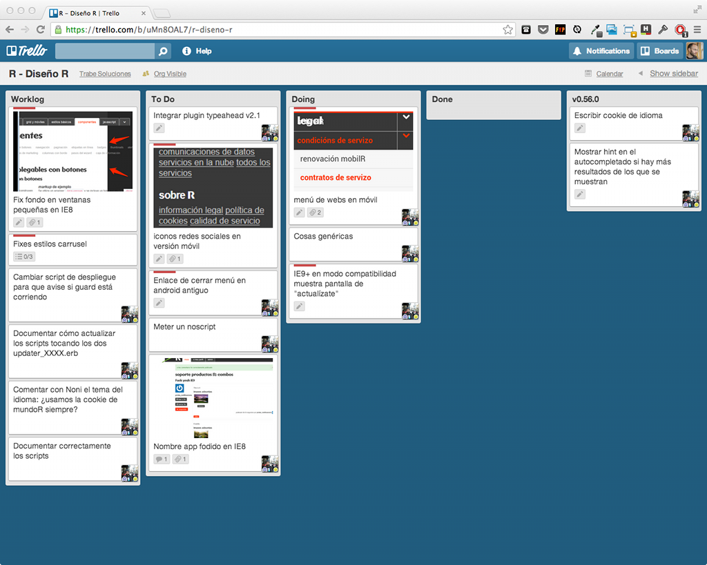
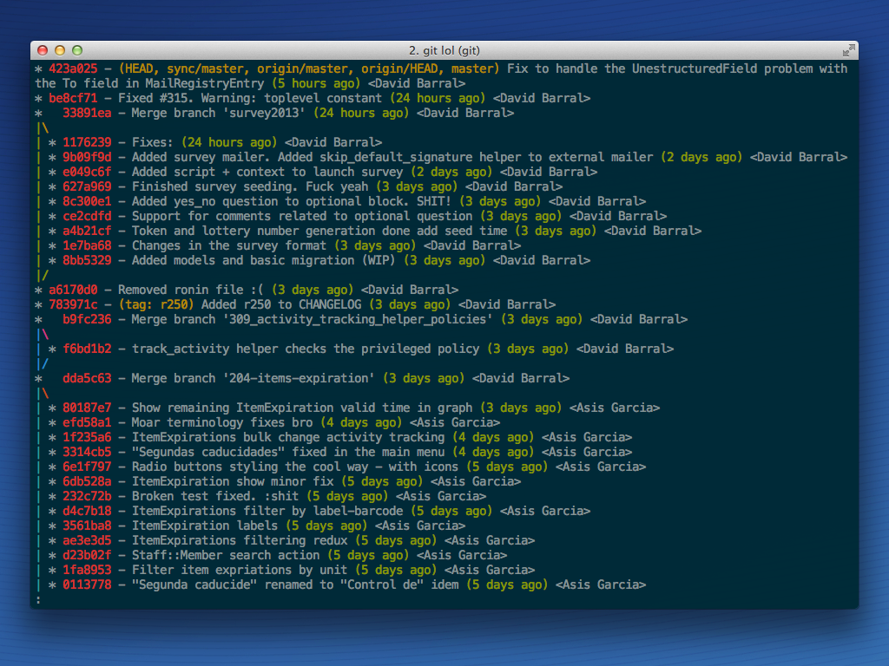
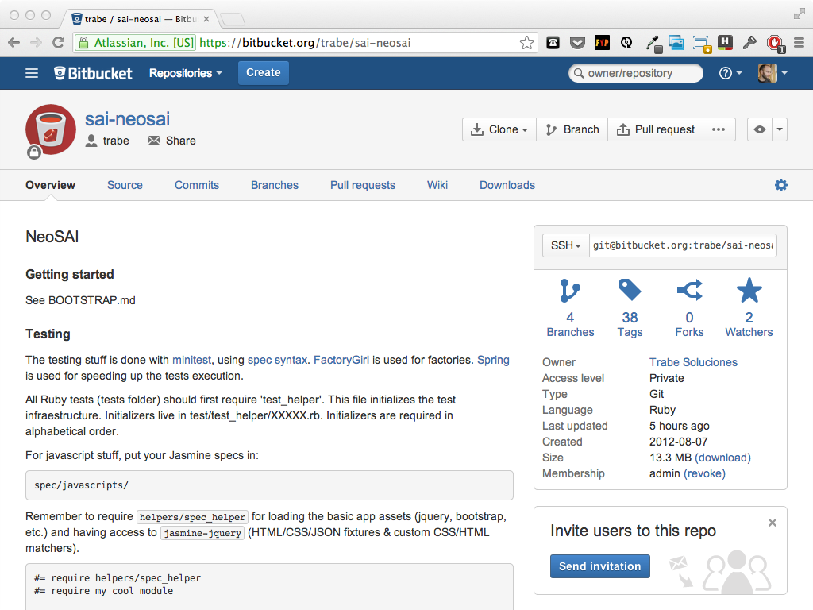
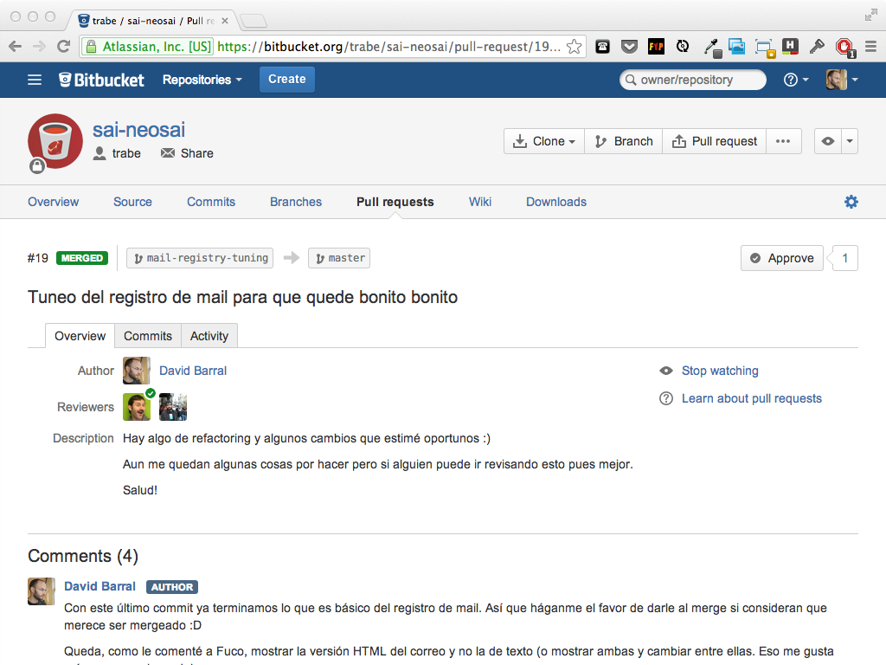

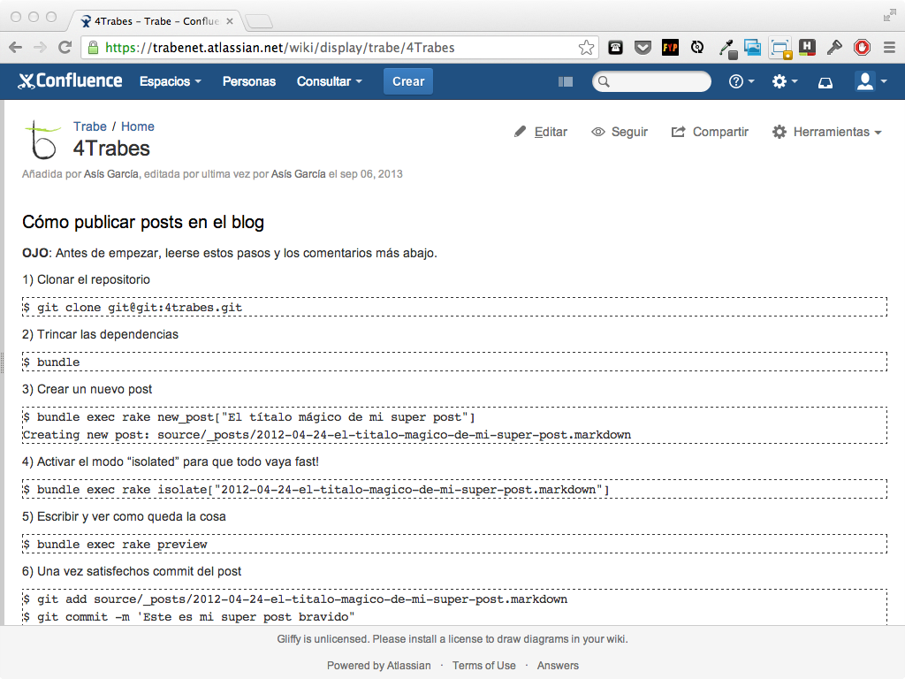
- conventions
- automation
- scripts
- bootstrap
$ git clone trabe:awesome-project
$ cd awesome-project
$ ./bin/setupTESTs, TESTs, TESTs
- Automatic run (guard)
- Mocking
- Metrics (coverage)
Conveniences
- Transpilers: CoffeScript, SASS, etc.
- Debugging tools
- Live Reload. YAY!

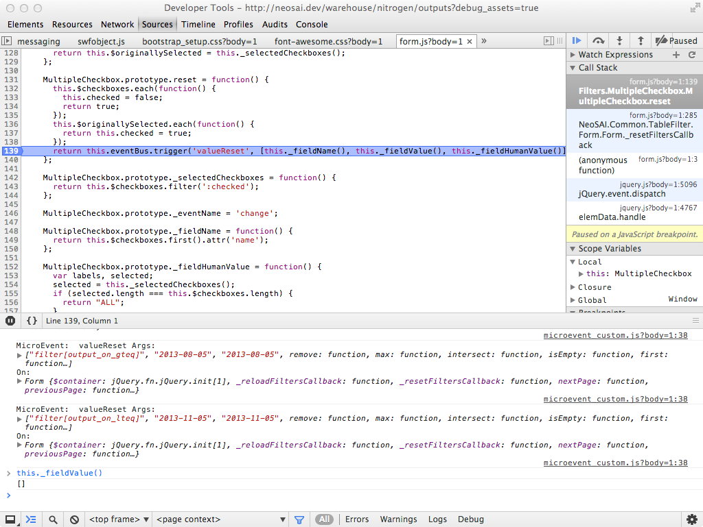
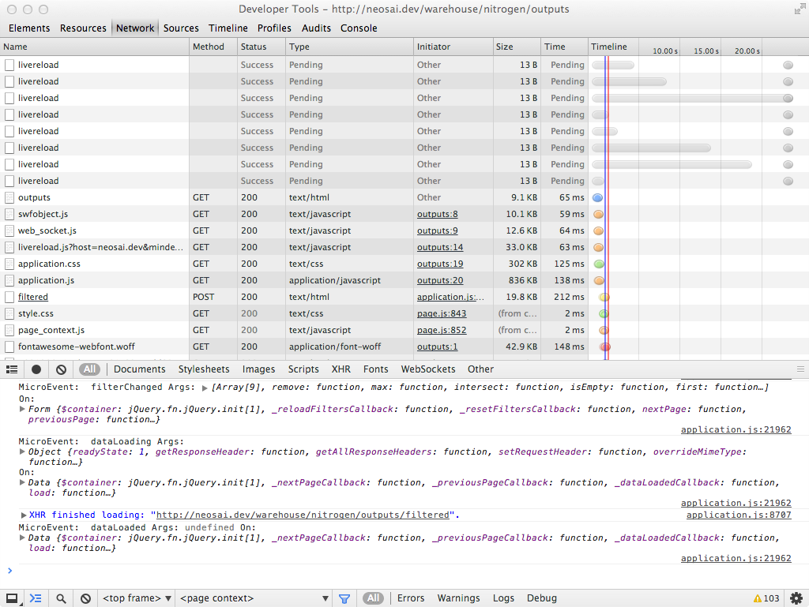
Real life problems & solutions
Context
NeoSAI
A Laboratory Management System
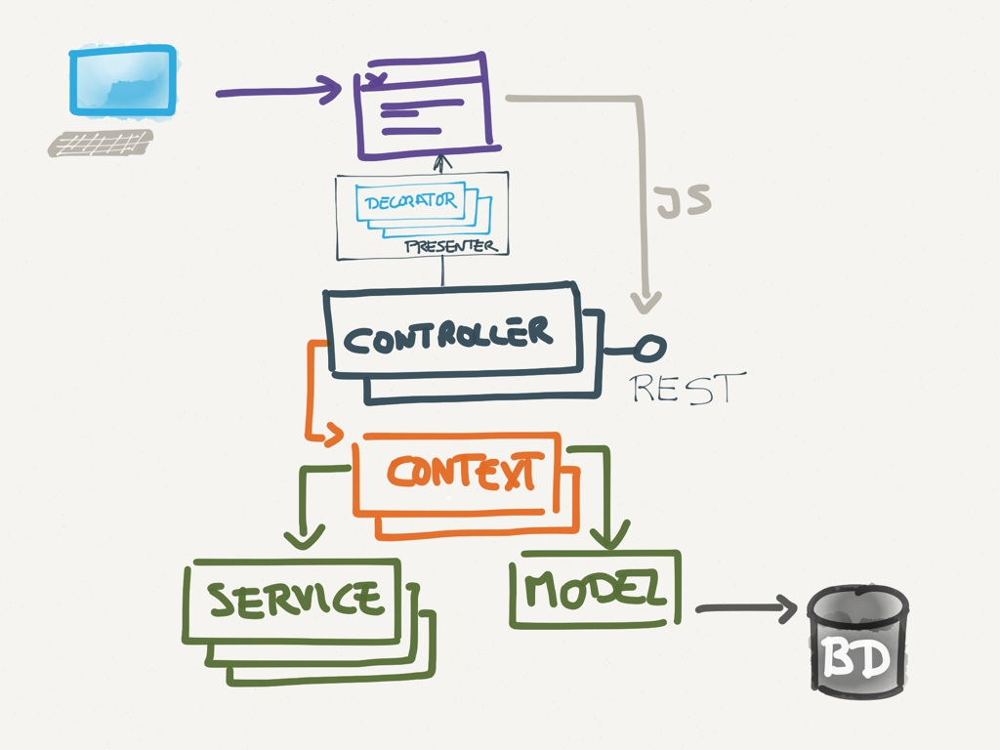
Problem
Different kinds of UIs
Solution
- Basic CRUD: forms & listings
- Advanced CRUD: JS components + AJAX
- Complex tasks: Single-page app + REST
WTF are REST APIs?
- Theory
duh, duh, duh (and more bullshit) - Practice
way to comunicate apps/systems through HTTP
WTF are REST APIs?
- URIs
- HTTP verbs
- HTTP Status codes
- JSON params/response (or XML or whatever)
GET https://api.twitter.com/1/users/show.json?screen_name=trabe
{
"id": 6253282,
"name": "Trabe",
"location": "A Coruña, Spain",
"followers_count": 3000000
...
}Problem
Run the same business logic from different places
Solution
Context objects
Runnable from app controllers,
API controllers, cron jobs
class CreateUserContext
def initialize(user_params, notifier)
...
end
def run
user = User.new(user_params)
if user.save
notifier.send(:new_user, user)
end
end
endProblem
Run business logic as different users, even as no user
Solution
- Context objects
- Runnable as user
- NullUser (NullObject pattern)
NullObject pattern
- Remove branching logic
- Avoid null errors
- Improves testability
class User
constructor : (name) ->
this.name = name
greet = (user) ->
if user
alert "Hi #{user.name}!"
else
alert "Hi stranger!"
john = new User('John')
keith = null
greet john # Hi John!
greet keith # Hi stranger! class User
constructor : (name) ->
this.name = name
class Stranger extends User
constructor : ->
super 'stranger'
greet = (user) ->
alert "Hi #{user.name}!"
john = new User('John')
keith = new Stranger()
greet john # Hi John!
greet keith # Hi stranger!Problem
Complex permission checks
Can change a report if I am the author or its author is one of my subordinates and the report has not been signed
the customer
Solution
Policy objects
class ReportsController
def edit
report = Report.find(params[:id])
can_edit = ReportEditorPolicy.
new(current_user, report).comply?
...class ReportEditorPolicy < Policy
def initialize(user, report)
...
end
def comply?
(owner_of_report? or
subordinate_report?) and
unsigned_report?
end
...Problem
User role based behaviour
Solution
- Inject user with
role dependent methods - State pattern (sort of)
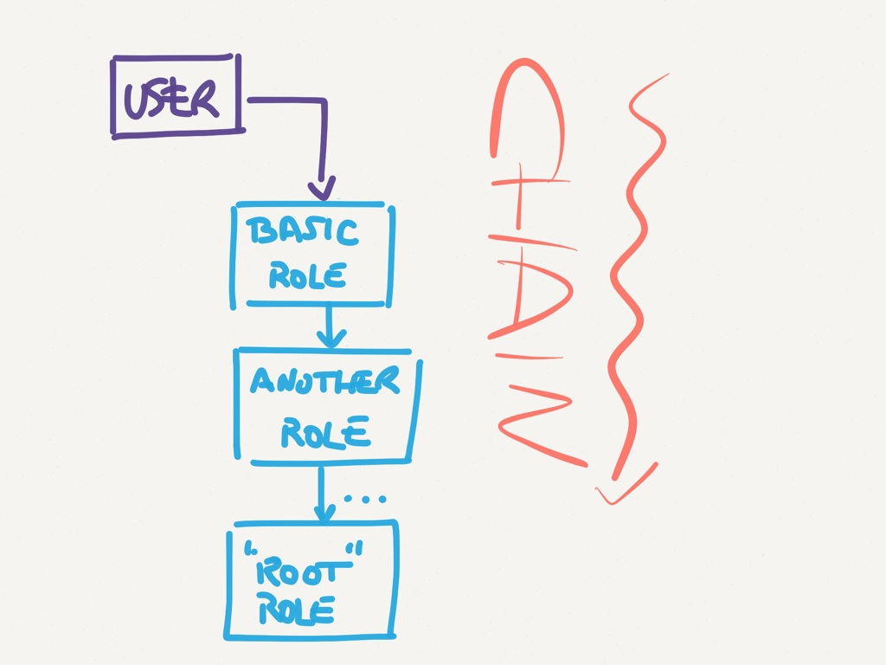
Problem
Present same model object in different ways on different views
Solution
- Decorator pattern
- Decorate associations too
- One or multiple decorators
- Variant: presenter pattern
class User
def initialize(name, email)
...
end
end
class UserDecorator
def initialize(user)
...
end
def name
user.name
end
def email
user.name + "<" + user.email + ">"
end
enduser = User.new('john', 'john@mail.com')
decorated_user = UserDecorator.new(user)
mail = new Mail()
mail.send to: decorated_user.emailProblem
Global search
Solution
- External Indexer (REST API)
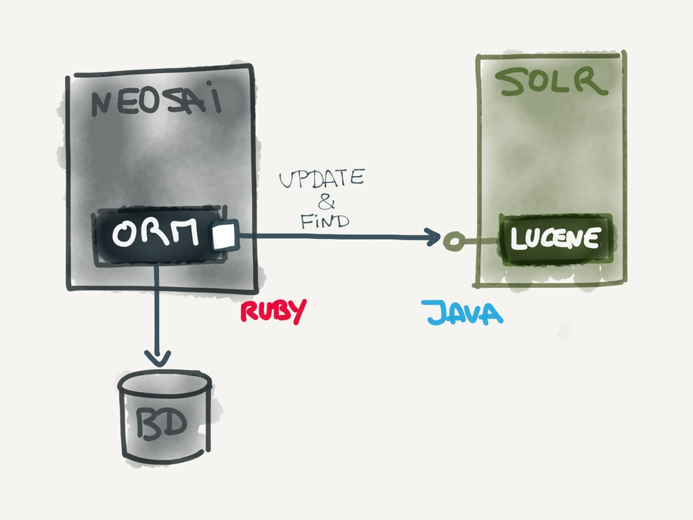
The many hells
of Computer Science
There are only two hard things in Computer Science: cache invalidation and naming things.
Phil Karlton
Easy cache invalidation
LRU Caches + Auto expiring keys
class User
def cache_key
"user#" + id + "#" +
updated_at.to_millis
end
end
cache user.cache_key do
...
endEasy naming
There is no easy naming. Sorry folks!

Maybe there are more hard things

Encoding hell
Use UTF-8
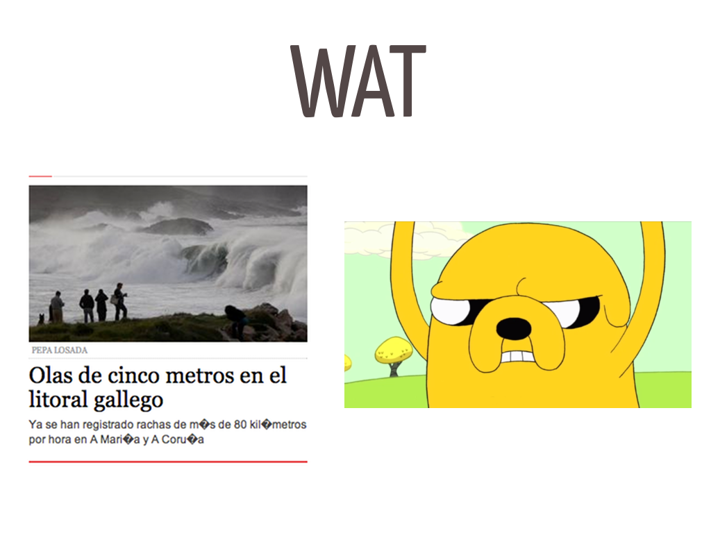
Timezones, i18n, l11n, Accessibility hell
Always use UTC :D
Treat i18n, l11n and accesibility as first class citizens
Beware of software/tools/libraries quirks
# DB stores UTC. Conversion done by Rails
r = Report.first
r.created_at # => 2013-11-06 00:00:00 +0100
r.created_at.utc # => 2013-11-05 23:00:00 UTC
Report.where('DATE(created_at) = ?',
r.created_at.to_date)
# Ooooopppps!
#
# SELECT * FROM reports
# WHERE (DATE(created_at) = '2013-11-06')A test should have
detected the defect ;)
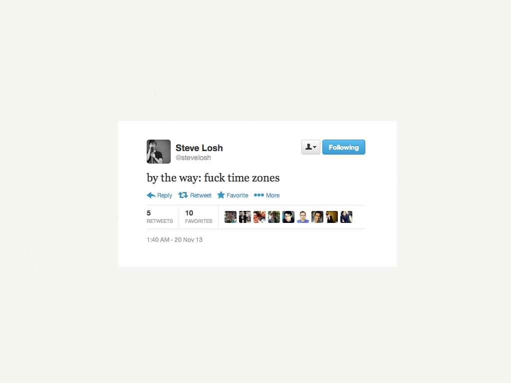
The money hell
Beware of spanish taxes and accounting
Use f**king cents
The money hell
a.k.a the floating point hell
Stick to integers. Use fixed point
Deployment and
environments hell
Define enviroments from square one
Automatize deployment as much as you can
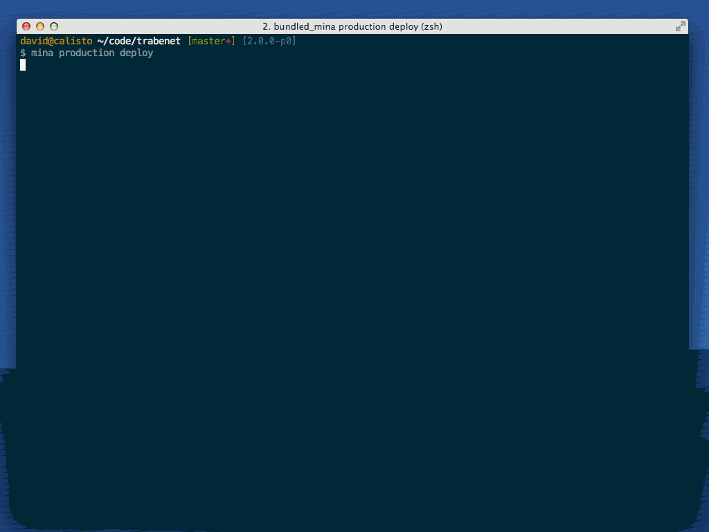
Migration hell
Data evolves along your code
Use some way of control/script/automate migrations
i.e. RoR migrations, Flyway for Java
add_column :invoices, :report_id, :integer
Invoices.find_each do |invoice|
order = Order.where(number: invoice.order_number)
invoice.order = order
endBeware of data massaging
Either complex or simple ¬¬
add_column :invoices, :report_id, :integer
Invoices.find_each do |invoice|
order = Order.where(number: invoice.order_number)
raise "Fuck" if order.client_id != invoice.client_id
invoice.order = order
endDocumentation/Code sync hell
Self explanatory code (DRY)
Document APIs
Document wisely
Treat documentation as part of the code
/**
* Returns the user names in alphabetical order
* @returns the names
*/
public String[] orderedNames() {
return sortAlphabetically(this.getNames());
}
/*
* Sort with quicksort algorithm
*/
private String[] sortAlphabetically(String[] words) {
// lines of elegant yet uninteligible code ;)
}Multithreading hell
Use multi process
Avoid too much low level
Inter Process Communication
- Unix Sockets
- Queues
- Shared memory
Or use a library!
Or switch to erlang :P
Fragmentation hell
- Do your HTML5/CSS3/JS homework
- SOLID also applies (SMACSS, etc)
- Know how to tame browsers
- Know how to tame mobile
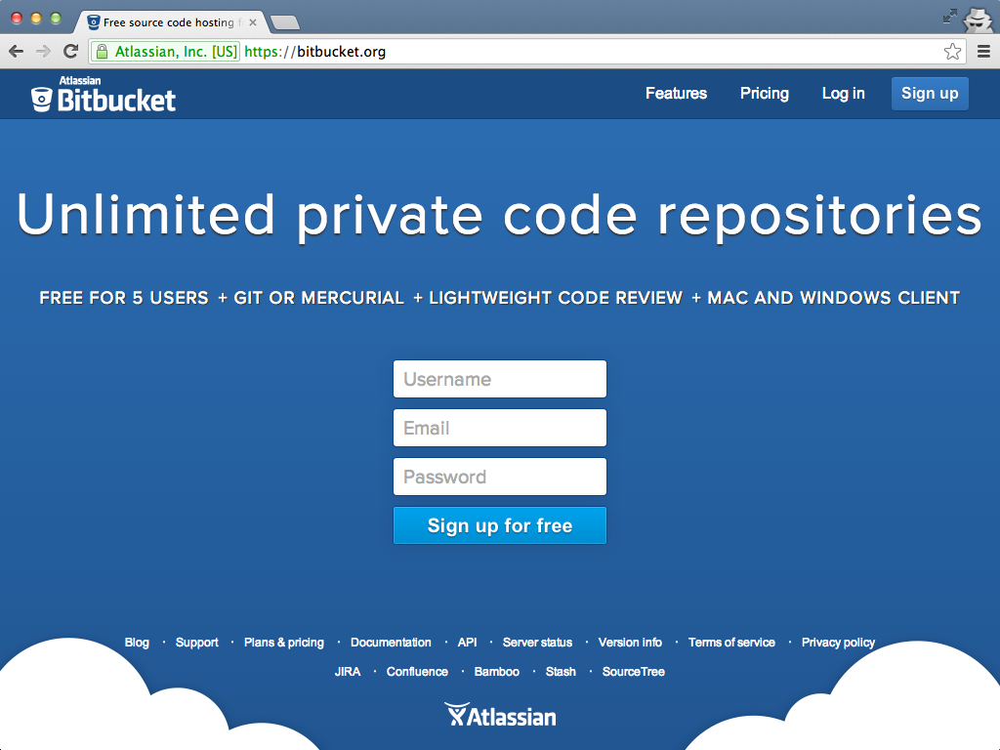
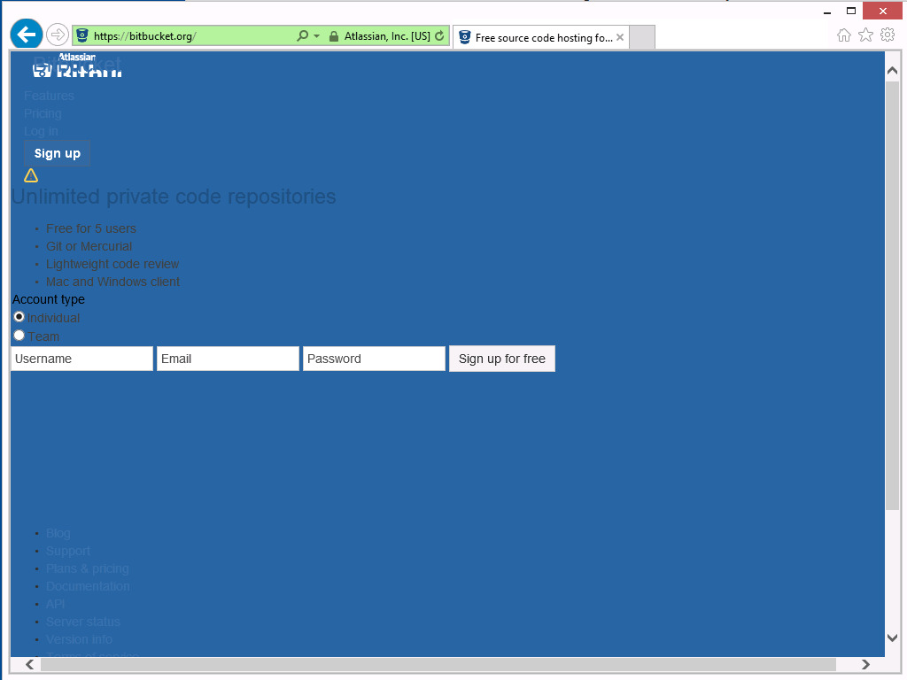
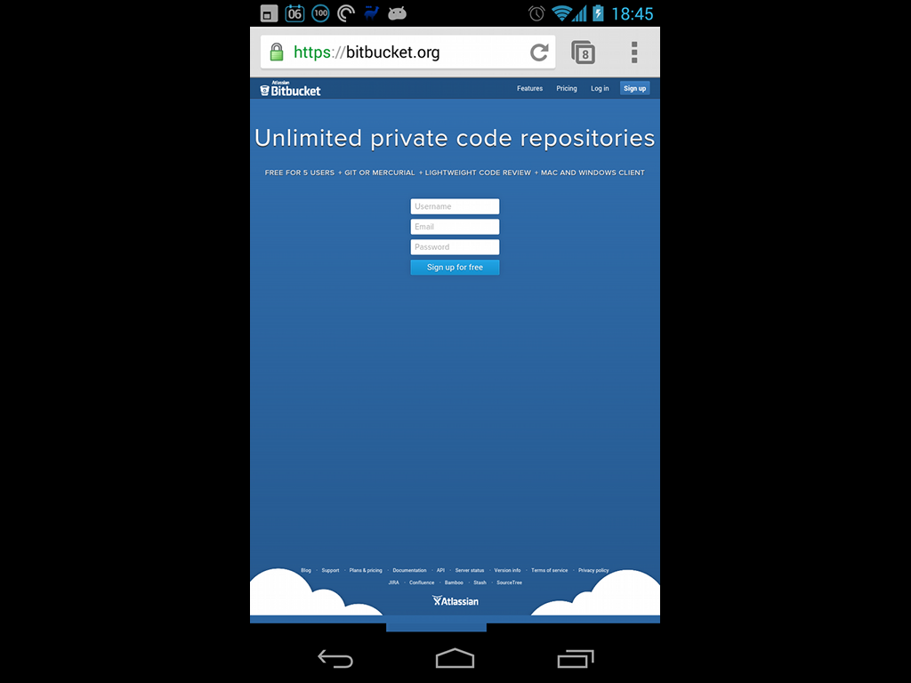
MVC Inception hell
Inside an webapp MVC there is another MVC
There are many more hells
Integration, legacy management, and so on
You'll discover them in time T_T
Parting note
SOLID (SRP in particular)
- ↓
- Simple
- ↓
- Easy to change
- ↓
- Happiness \(^o^)/
YAGNI
- ↓
- Simple
- ↓
- Easy to change
- ↓
- Happiness \(^o^)/
TESTs, TESTs, TESTs
- ↓
- YAGNI + SOLID
- ↓
- Simple
- ↓
- Easy to change
- ↓
- Happiness \(^o^)/
Refactor, Refactor, Refactor
(code and tests)
- ↓
- Better code & tests
- ↓
- ...
- ↓
- Happiness \(^o^)/
DRY more than your code
Automatize, share, extract

Questions?
Do your PFC at Trabe
.
..
...
Encore
It's up to you
More real life problems & solutions
More about NeoSAI
the Laboratory Management System
Problem
Integrate new & legacy app
Solution
- Shared DB
- REST APIs (JSON preferred)
- SSO
- UI integration via IFrame +
HTML5 PubSub
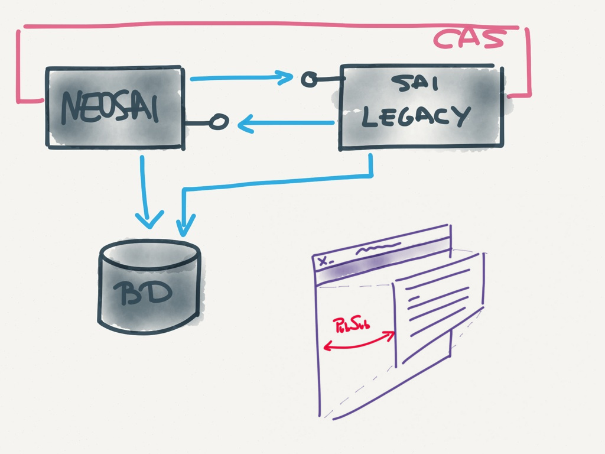
Problem
Integrate "nonintegrable"
third party software
Solution
- Ad hoc REST API
- Mail vacuums
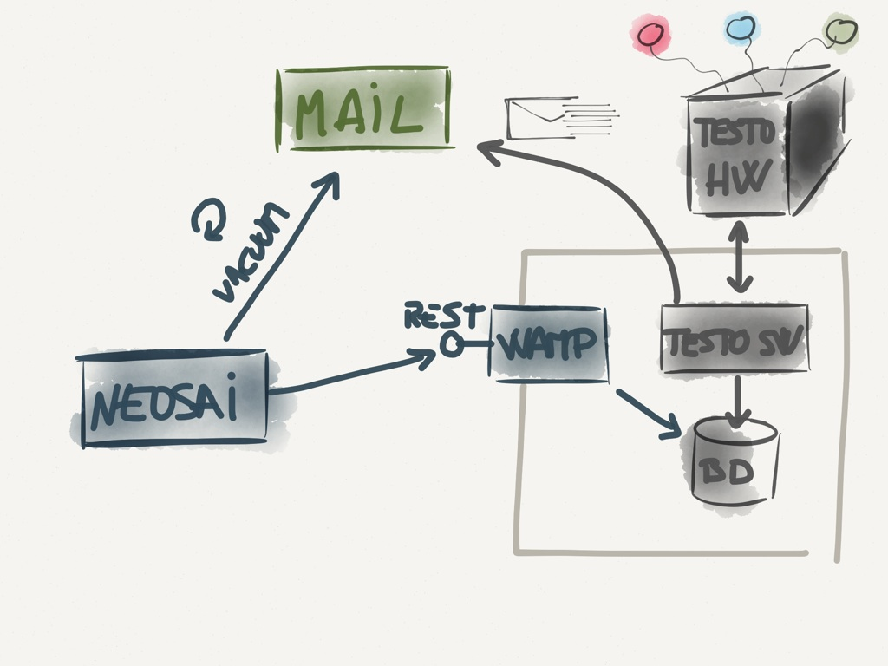
Problem
Mail log: different sources
Solution
Wrapper + REST API
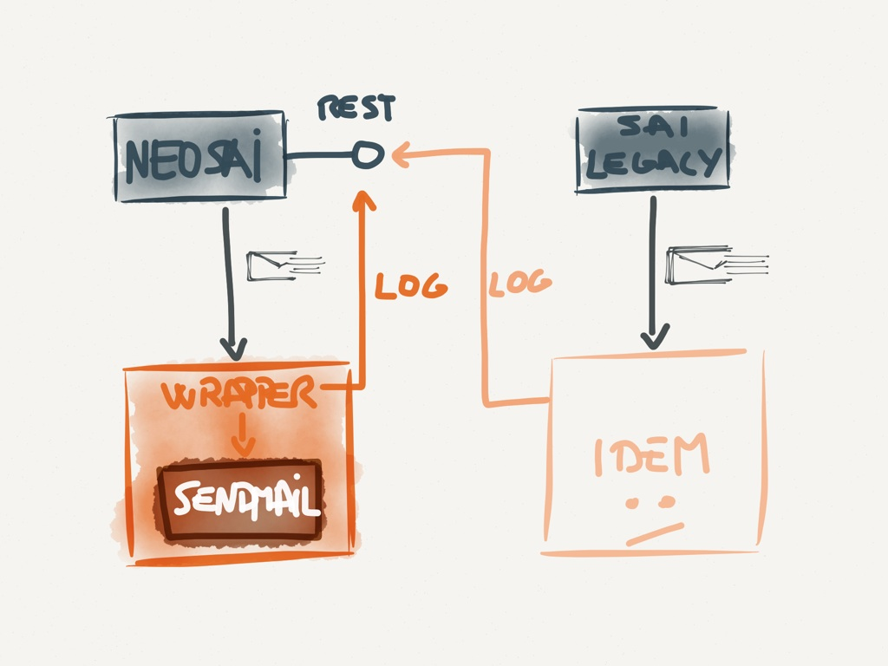
Problem
Long running contexts
Solution
- Execute contexts in background
- Jobs queues
- Jobs executor
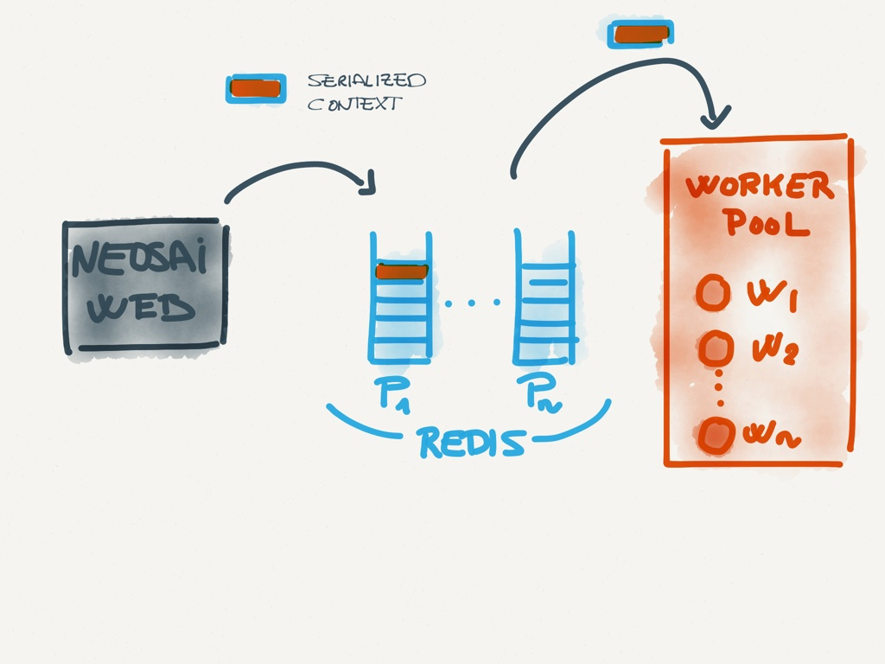
FEDERICO
Application integration
a.k.a. real life hitting your groin
Problem
Signup/signin on multiple services
Consolidate personal info
Solution
- Procedure repository
- Orchestrate services (Service Bus)
- Single Sign On
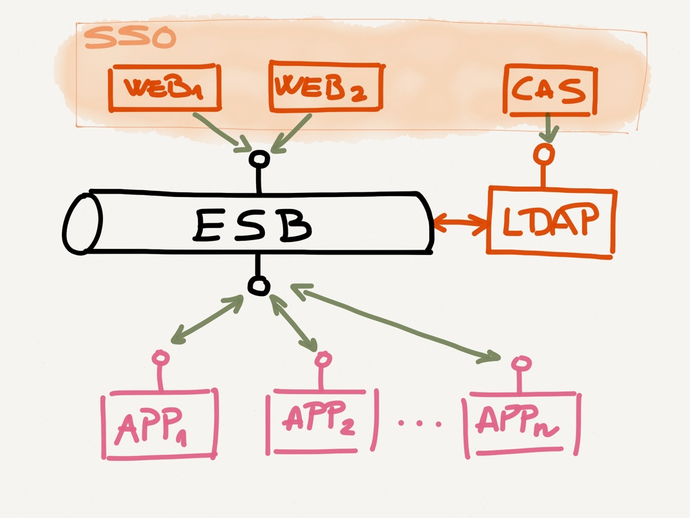
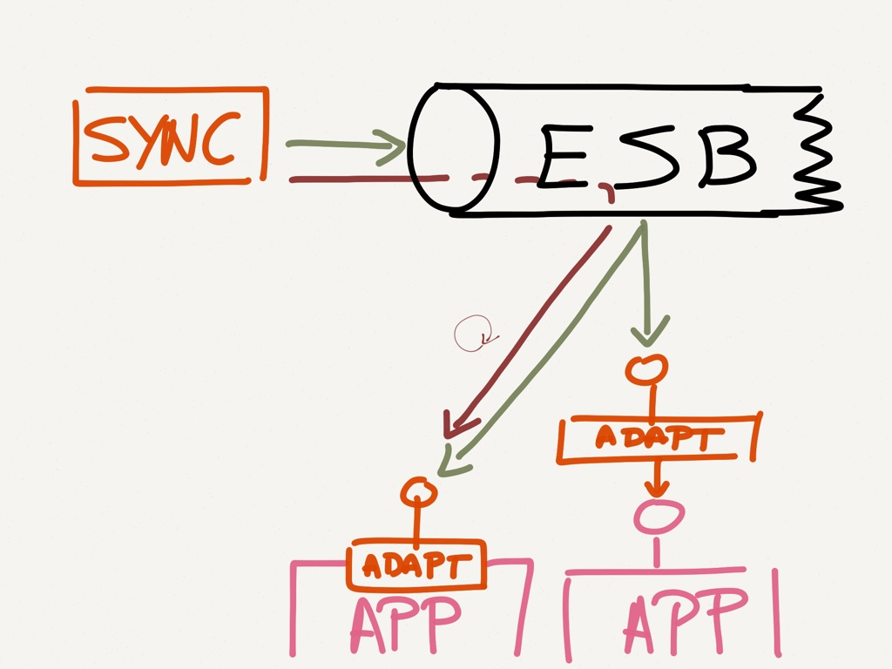
Technology
- Java stack
- Ruby for automation
DCI
Data, Context, Interaction
class BankAccount
attr_accessor :balance
end
module TransferSource
def withdraw(amount)
self.balance -= amount
end
end
module TransferTarget
def deposit(amount)
self.balance += amount
end
endclass TransferContext
def initialize(source, target, amount)
...
end
def run
source.extends TransferSoure
target.extends TransferTarget
source.withdraw amount
target.deposit amount
end
endDCI
- SRP
- Reusability
- Testability
- Best with dynamic langs
- Beware of implementation quirks